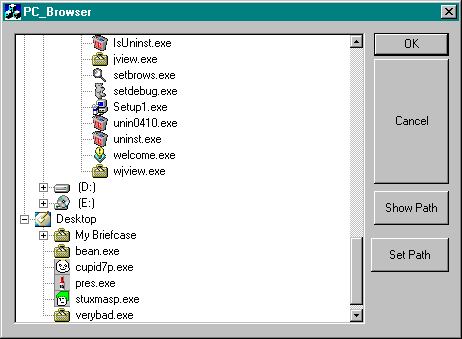

CDirTreeCtrl: проводник, основанный на классе CTreeCtrlАвтор: Nicola Delfino.  CDirTreeCtrl это надстройка для CTreeCtrl и позволяет
просматривать структуру директорий файловой
системы ввиде дерева, наподобие виндузового
проводника. В то время, как древовидное окно
проводника Windows показывает только директории,
этот браузер показывает так же и файлы. bool CMyDirTreeCtrl::MatchExtension(CString file){ если Вы хотите, чтобы показывались только файлы .exe и .gif ... bool CMyDirTreeCtrl::MatchExtension(CString file){ и наконец, чтобы показывались все файлы: bool CMyDirTreeCtrl::MatchExtension(CString file){ DirTreeCtrl содержит также 2 дополнительных метода: SetPath( ) , который позволяет устанавливать браузер на определённую директорию и GetPath( ) , который возвращает (полный) путь выбранного элемента дерева. DirTreeCtrl (и демонстрашка) были написаны и протестированы в Visual Studio 6 Service Pack1. Возможно они будут работать и в предыдущих версиях DevStudio и MFC. Скачать исходник класса - 5 KB
|